| 日付 | 2012年2月18日（土） |
|---|---|
| 山域 | 道志山塊 |
| メンバー | 家族（妻、長女・0歳） |
| 山行形態 | 子連れ日帰り |
| アクセス | 車 |
| ルート (Map) | 和出村→菜畑山→本坂峠→戸渡→和出村 |
車のタイヤチェーンを買ったので、どんな山でもアプローチできるようになった。
というわけで、前々から何度か登ろうと計画をしていた菜畑山に行ってみることにする。
菜畑山と書いて「なばたけうら」と読む。
人の訪れが少ない道志山塊の静かな山だ。
朝起きると家の前は薄らと雪に覆われていた。
山奥の道志村の道はしっかり雪に覆われている。
たまらず仕入れたばかりのタイヤチェーンを装着する。
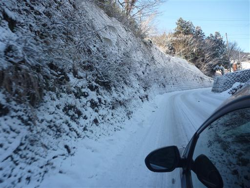
周りの木々はみな雪に覆われている。
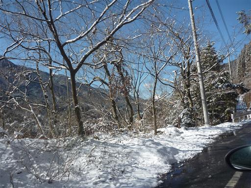
9:42 和出村バス停前駐車場到着。標高630m。
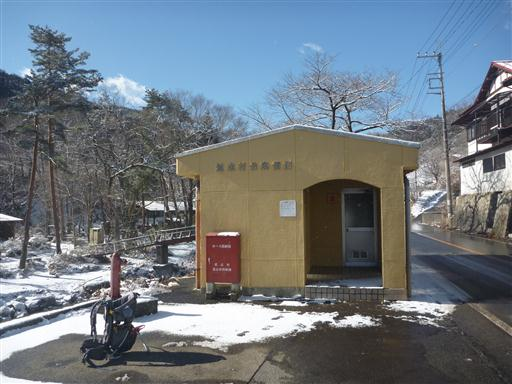
集落の中の小道を登っていく。この辺りは標識が無くて、登山道を探すのに少し戸惑う。
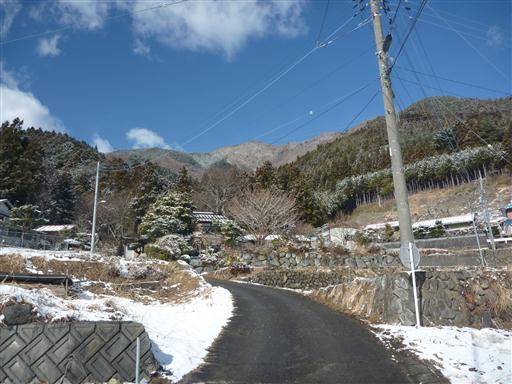
雪に覆われた道志の集落を見下ろす。
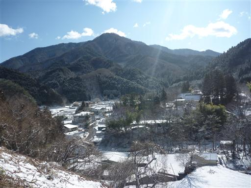
風が強いのか、付近の山では雪煙が舞っている。
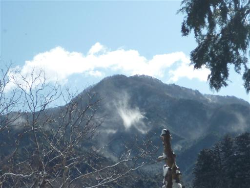
登山道に入る。登り始めから雪の中だ。
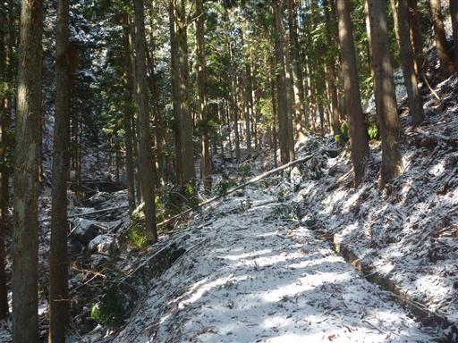
斜面に付けられた道は雪が積もっていると歩きにくい。
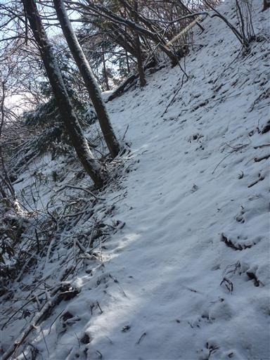
送電線鉄塔が建つ場所に出てくる。
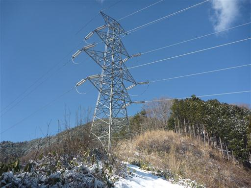
視界が一気に開ける。道志の白い山々が連なっている。
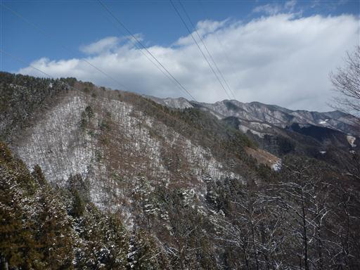
鉄塔から先はしばらくの間、藪っぽい道が続く。
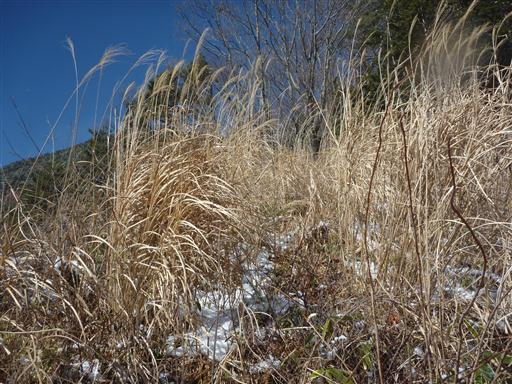
藪を通り過ぎると歩きやすい尾根道になる。
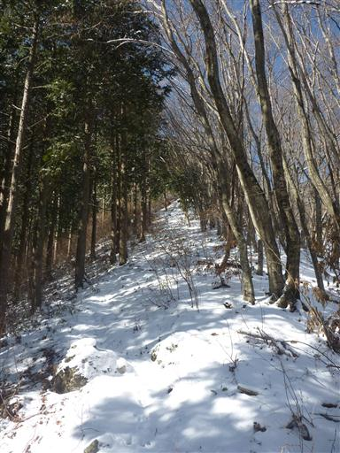
一登りで車道に到達する。ここからしばらくは車道を歩くことになる。
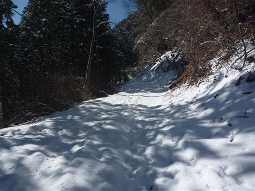
車で車道の終点まで行くと菜畑山には30分程度で登ることができる。
車のわだちは途中で消えている。雪が深いのであきらめて引き返したのだろうか？
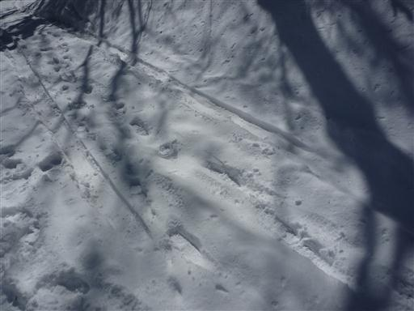
風が吹くと木に積もった雪が落ちてくる。
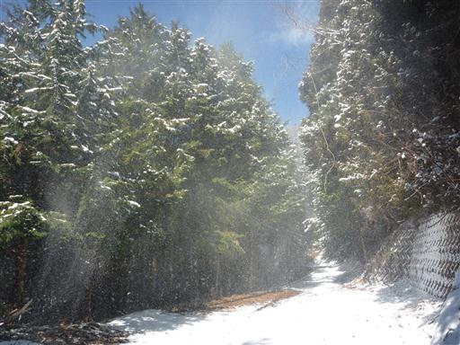
車道の終点まで歩き、再び登山道が始まる。
車道についていた足跡も途中で消えてしまい、この辺りに人の足跡は見当たらない。

登山道入口から雪があったのに、上の方に来ても大して雪の量は増えていない。
山頂まで急な坂道をどんどん登っていく。
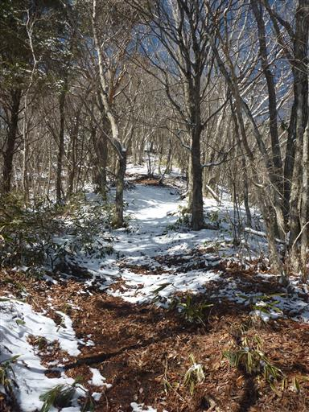
11:43 菜畑山山頂到着。標高1283m。
登山道が集まる山頂にも足跡は全く見られない。
ここ最近誰も登っていないようだ。
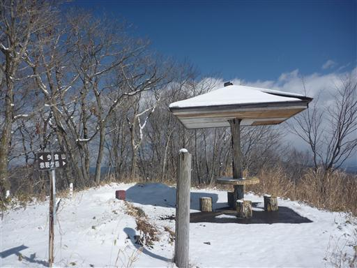
山頂からは富士の大きな姿を望むことができる。
今日は快晴予報だったが、少し雲が引っ掛かっている。
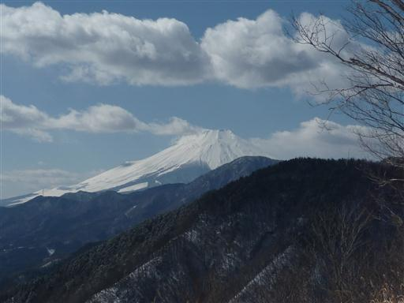
南に目を転じると、丹沢山塊の大室山が大きい。北丹沢を代表するピークだ。
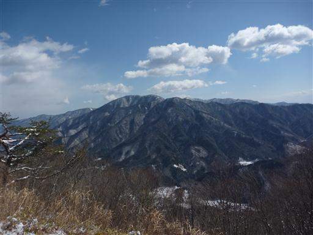
東屋にはつららができている。山頂は風が吹くとかなり寒い。
余りじっとしていられないので、昼食をとって早々に出発する。
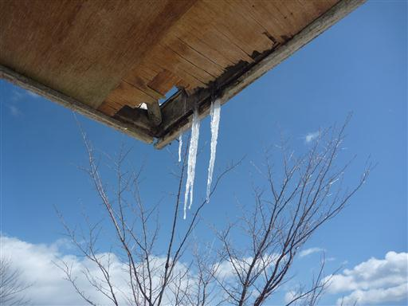
菜畑山から朝日山方面に続く道志の縦走路に足を踏み入れる。
こちらは北側斜面のため雪が深い。
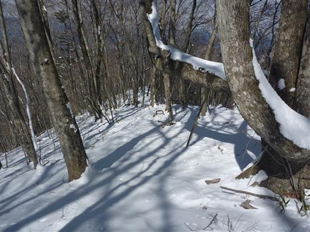
急斜面の尾根道が続く。そこそこ雪が締まっているため歩きやすい。
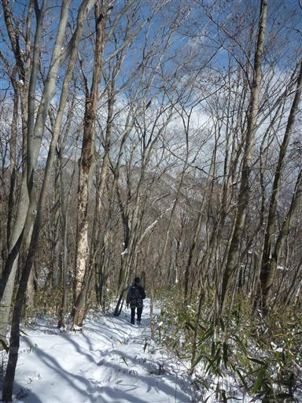
振り返ると樹林の向こうに菜畑山の山頂部が見えている。
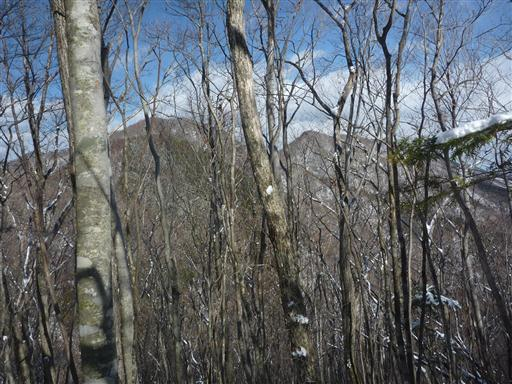
鞍部を過ぎて登り返しになると雪はほとんどなくなる。
この登りもなかなかの急傾斜だ。
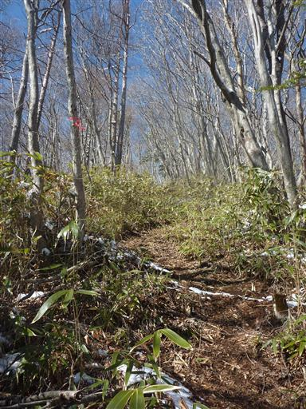
ブドウ岩ノ頭に到着。尾根上の小ピークだ。
縦走路はここで方向が東に90度曲がる。
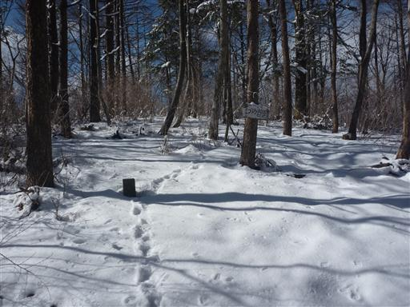
ブドウ岩ノ頭から下ったところの鞍部が本坂峠だ。
ここから朝日山を経由して下山する予定だったが、
雪道で予定より時間を消費してしまったため、ここから下山することにする。
標識には落書きで「良い道でヤブなし」と書かれている。
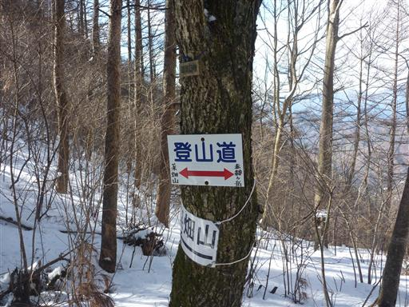
峠から下山道に入っていく道は倒木が邪魔していて少々分かりにくい。
樹林帯の中の登山道も雪が積もっているせいで分かりにくい。
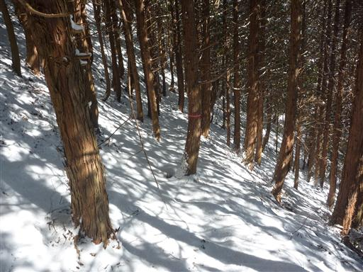
歩くのにさほど支障はないが、藪っぽい道だ。
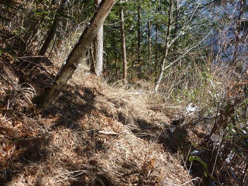
沢沿いに下りてくる。
この辺りは一面銀世界で見ているだけで寒くなってくる景色だ。
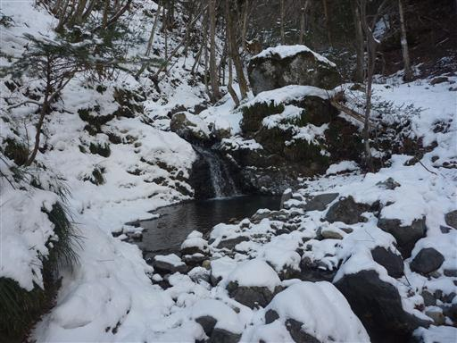
沢沿いの登山道には古い足跡がわずかに残っている。
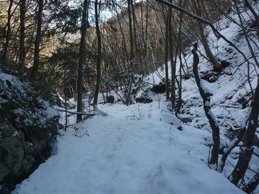
雪に覆われた橋を渡る。滑りそうで嫌なところだ。
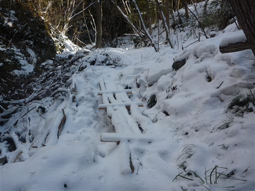
足元を見ると川の縁が凍り付いている。
滝の水しぶきが凍っているようだ。
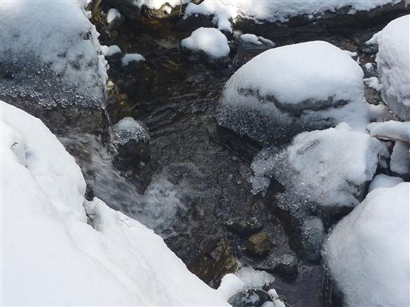
細かい粒々が並んでいて、まるで宝石のようだ。
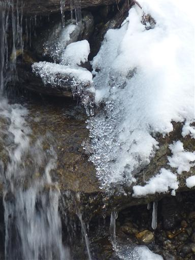
川に横たわる細い木の枝にもしっかり雪は積もっている。
川の水は非常に澄んでいる。
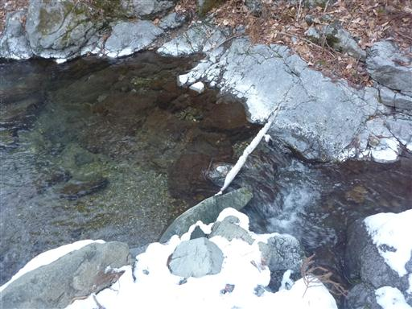
しばらく歩くと車道に出てくる。別荘のような建物が建っている。
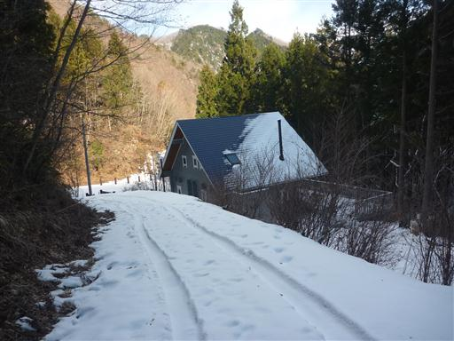
車道脇にあったキャンプ場。なぜかロープウェイの箱が並んでいる。
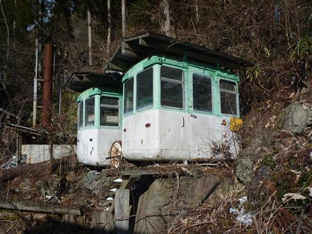
14:54 和出村バス停前駐車場到着。
車道の雪はほとんど無くなっている。これで帰りは安心だ。
強い寒気が入り込んでいる中での寒い寒い登山だった。
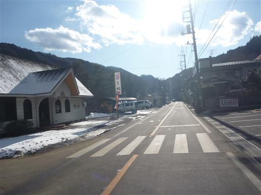